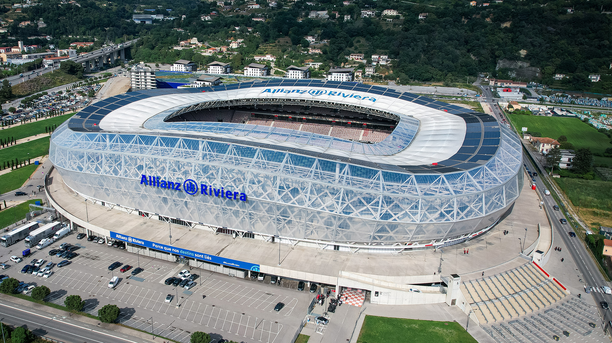
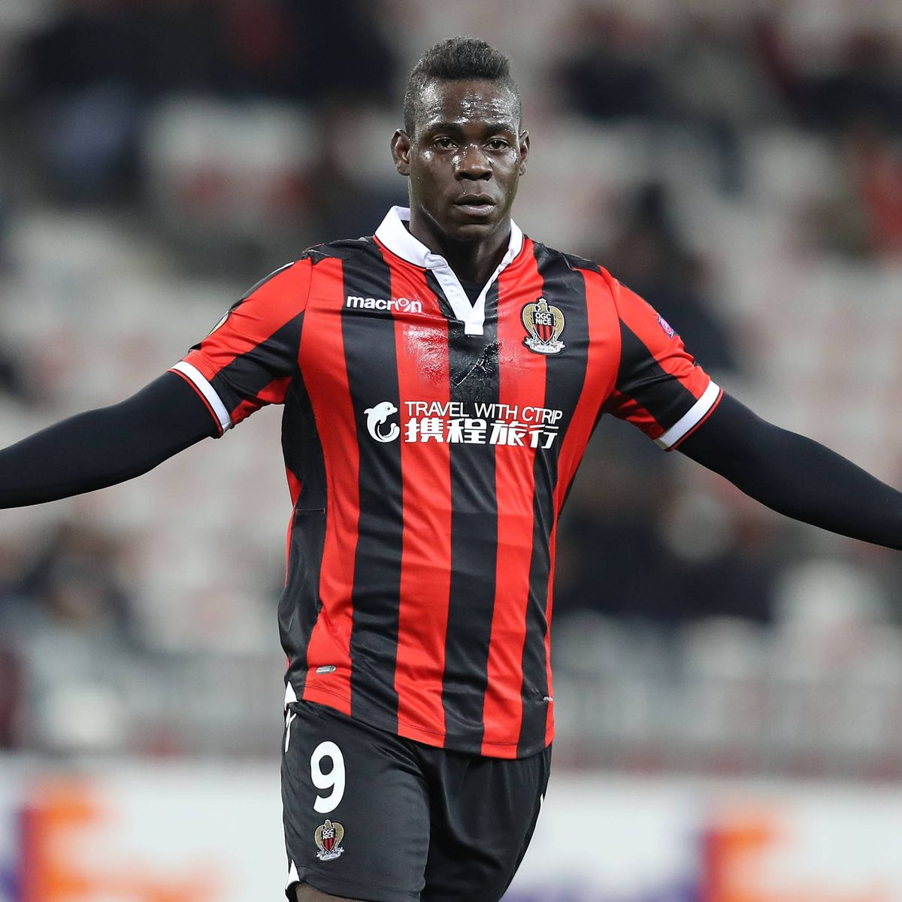
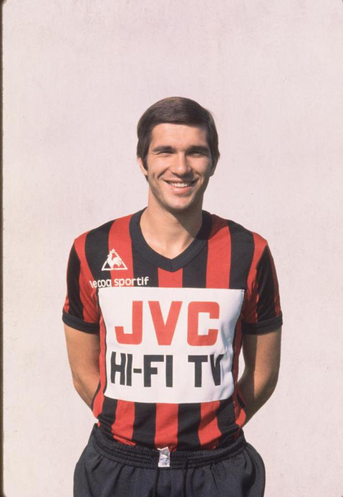
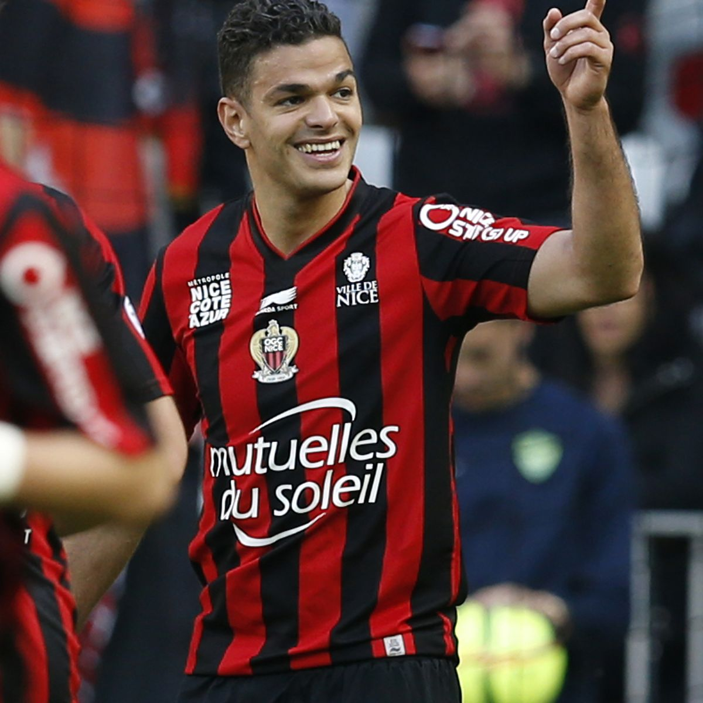

📸 Galerie du Gym







🎮 Quiz OGC Nice
Teste tes connaissances sur le Gym !
Découvrez l'histoire de l'OGC Nice, un club centenaire, une ville, une passion.
Fondé en 1904, l'Olympique Gymnaste Club Nice Côte d'Azur est l'un des clubs historiques du football français.
Installé sur la Côte d'Azur, le club représente une ville, une identité et des générations de supporters.
Naissance de l'OGC Nice, qui deviendra rapidement un acteur important du football français.
Une période légendaire avec des titres majeurs et des joueurs mythiques.
Le club continue de se développer et retrouve une place importante en Ligue 1.
Le Gym poursuit son ambition de devenir un club majeur en France et en Europe.
4 titres remportés : 1951, 1952, 1956, 1959
3 victoires : 1952, 1954, 1997
Inauguré en 2013, l'Allianz Riviera est devenu la maison du Gym.
Capacité : environ 36 000 places.
Un stade moderne qui accueille les grands moments de l'histoire récente du club.
Gardien formé à Nice devenu capitaine de l'équipe de France.
Défenseur brésilien et capitaine emblématique de l'OGC Nice.
Attaquant italien qui a marqué son passage sur la Côte d'Azur.
L'OGC Nice possède une identité forte portée par ses supporters et l'ambiance de la Populaire Sud.
Chants, tifos et ferveur accompagnent le Gym depuis des générations.




Teste tes connaissances sur le Gym !